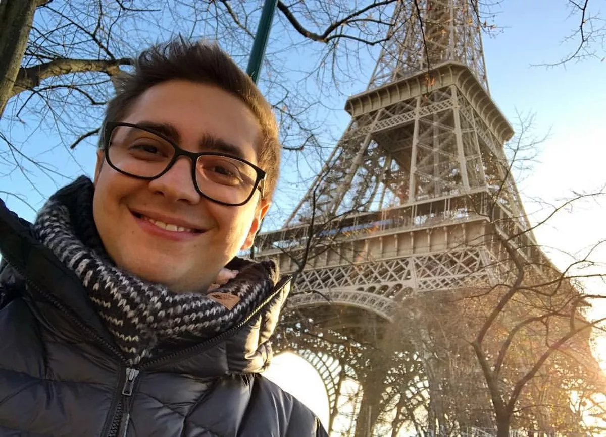
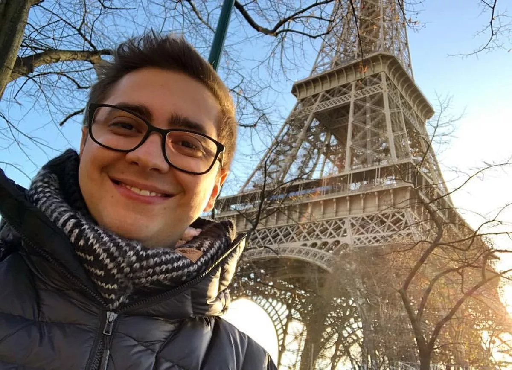

Quem é Alanzoka?
Alan ferreira pereira, mais conhecido por alanzoka the top one from brazil tem 18 anos e é um streamer da twitch que ja acumula mais de 5 milhoes de seguidores na plataforma, alanzoka começou como um youtuber fazendo gameplays de terror, atualmente tem dois canais, alanzoka e lives do alanzoka, com o primeiro parado e o outro ainda na ativa postando voids editado da live, os dois canais somam mais de 9 milhoes de seguidores.
 
